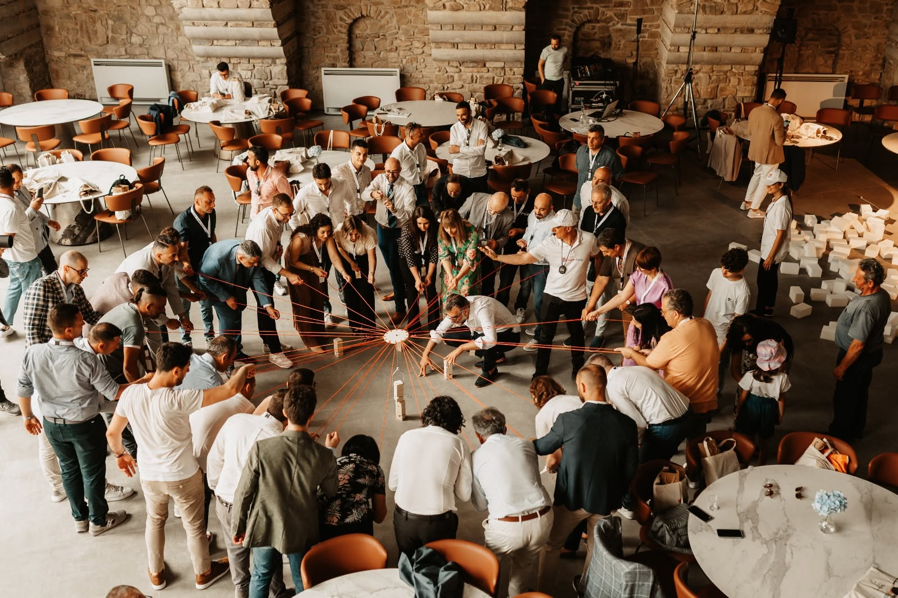
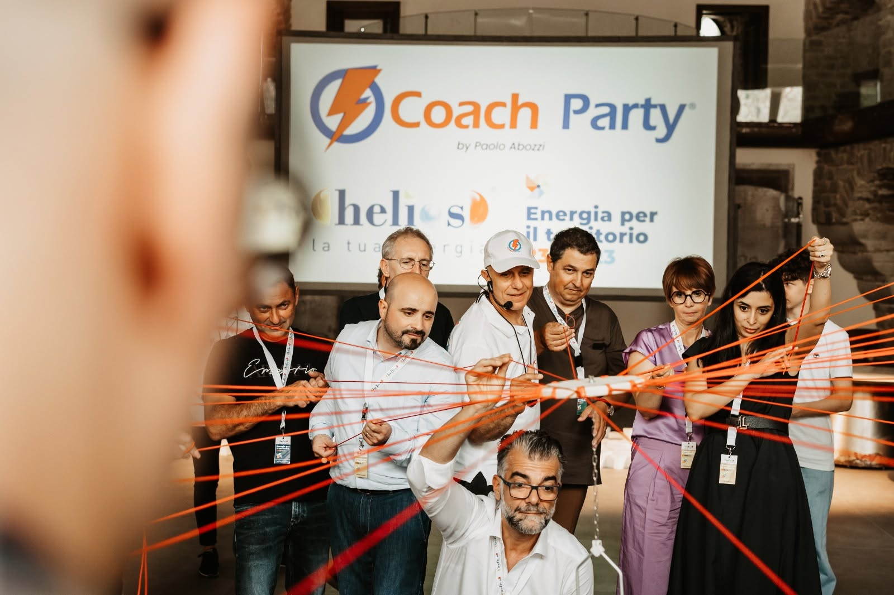
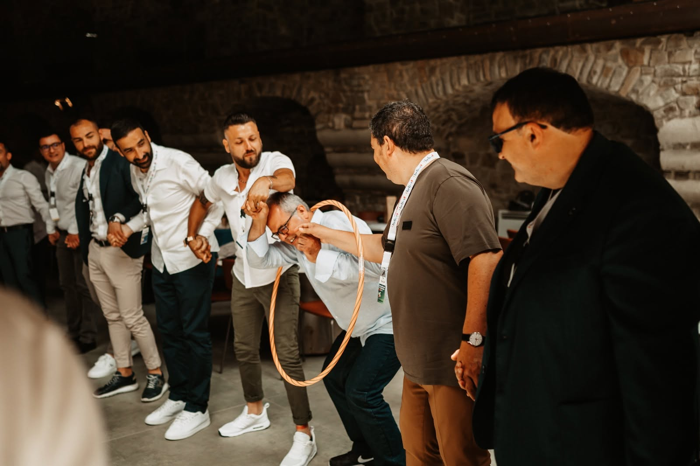
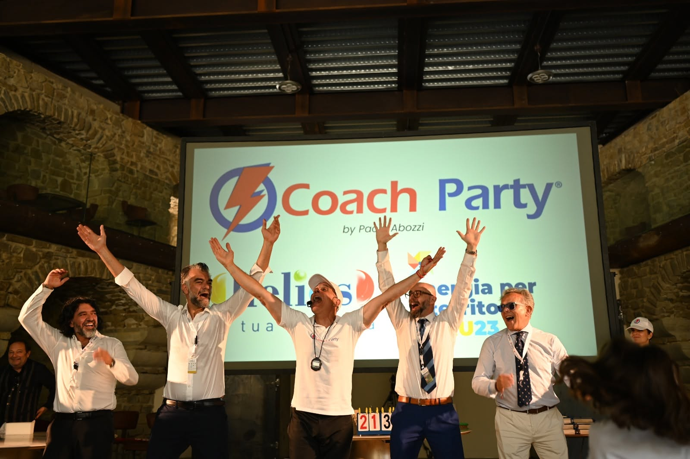
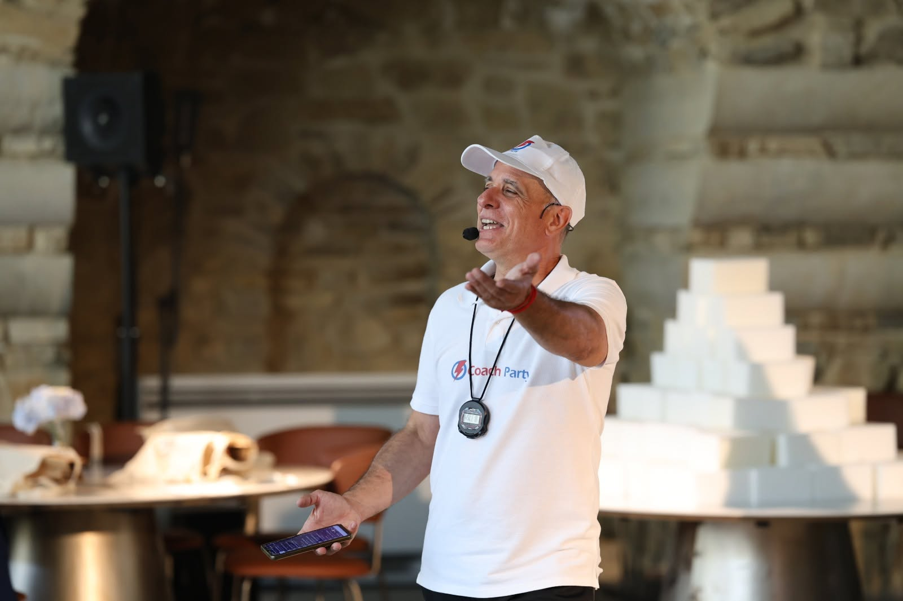

Gioco e relazione
CoachParty
Il piacere di mettersi in gioco, insieme.
Durata: Circa 2 ore
Parliamone su WhatsApp ↗
L’esperienza
Sfide, musica e movimento per gruppi di lavoro, ragazzi e famiglie. Un format che unisce attività di animazione e conduzione orientata alla partecipazione.
Che cosa faremo
- Dividersi in squadre e affrontare sfide condivise
- Alternare giochi, musica e movimento
- Concludere con una premiazione
Programma, spazi e dettagli organizzativi si definiscono nel confronto con Paolo.
Raccontami il tuo progetto ↗CoachParty in azione
Persone, gioco,
energia condivisa.




